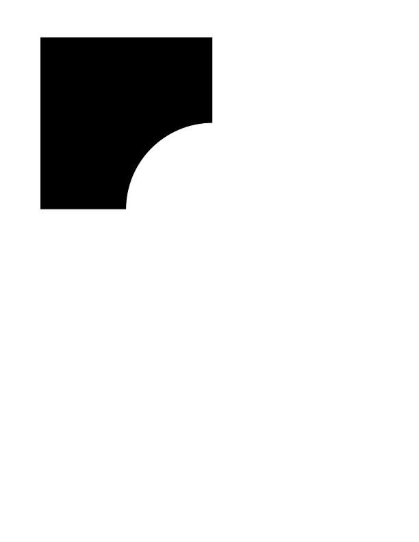
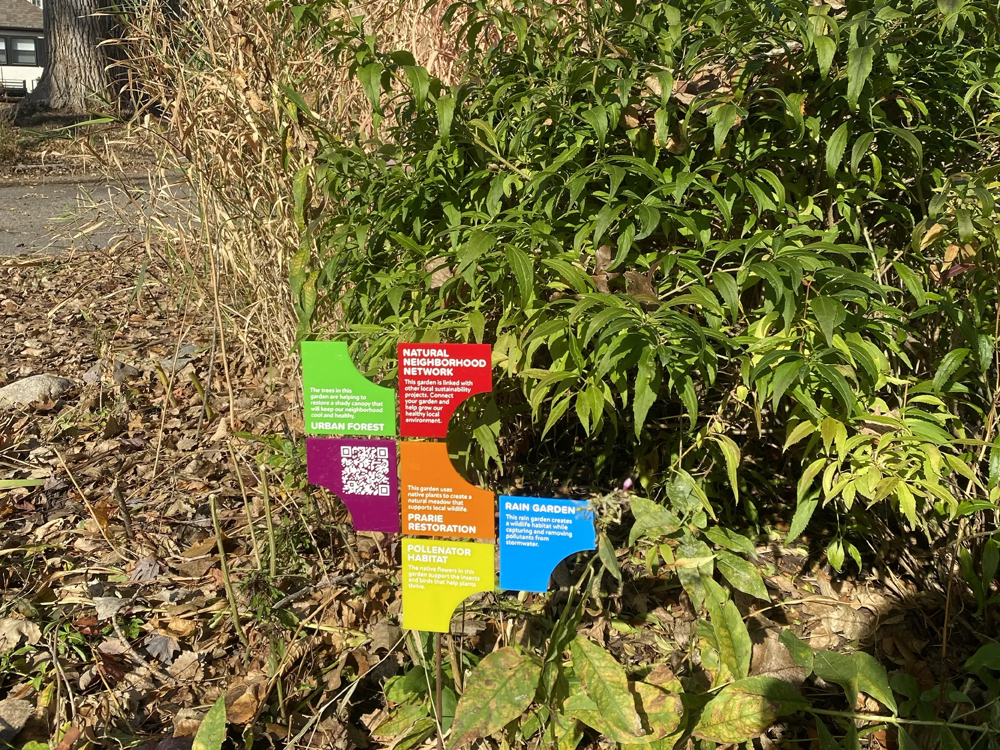

Rain gardens are depressed (bowl-shaped) gardens with sandy soils and deep-rooted native plants. They act like natural filters, capturing stormwater runoff and letting it soak into the ground, where the soils trap and remove harmful pollutants. In addition to managing stormwater, rain gardens provide beneficial habitat for pollinators and other wildlife.
